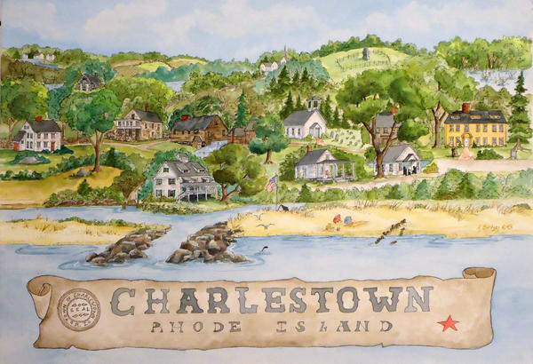

COME ON OVER
We’ll save you
a warm welcome.
Find The Cove on Old Post Road in Charlestown, Rhode Island.
LUNCH, DINNER & GOOD COMPANY
Restaurant hours
| Monday | Closed |
|---|---|
| Tuesday–Thursday | 11:30 am–9 pm |
| Friday | 11:30 am–10 pm |
| Saturday | 11:30 am–9 pm |
| Sunday | Noon–9 pm |
All times are Eastern. Holiday hours may vary. Call before a special trip.
FIND US
Right here in Charlestown.
3963 Old Post RoadCharlestown, RI 02813Open driving directions
Directions open in Google Maps and require an internet connection.

A LITTLE PLANNING GOES A LONG WAY
Before you stop by
How can I ask about reservations or a group?
Call (401) 364-9222 to ask the restaurant about seating and group arrangements.
Where can I find current specials and events?
Check The Cove’s Facebook page or call the restaurant for current updates.
What if I have a food allergy or dietary need?
Please speak directly with the restaurant before ordering. The menu marks some gluten-free options; staff can confirm ingredients, preparation, and suitability.
Who can help with accessibility questions?
For questions about visiting the restaurant or assistance with this website, call (401) 364-9222 or email marisa@thecoveri.com.